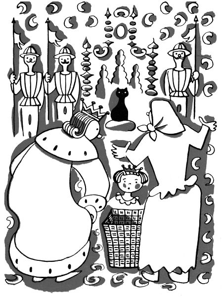

Velká kočičí pohádka
1. Kterak král kočku kupoval
V zemi Taškářů panoval král, a můžeme říci, že panoval šťastně, protože když to musilo být, všichni poddaní ho poslouchali ochotně a s láskou. Jen někdo ho občas neposlechl, a to byla jeho dceruška, malá princezna.
Dobře jí král poručil, aby si nehrála s míčem na zámeckém schodišti; ale kdežpak! Sotva si jednou její chůva chvilinku zdřímla, princezna už byla na schodech se svým míčem, a tu, jestli ji snad pánbůh potrestal nebo jí čert nastavil nohu, upadla a rozbila si koleno. Seděla na schodech a plakala, – kdyby to nebyla princezna, řekli bychom, že křičela na celé kolo. Toť se rozumí, hned se seběhly dvorní dámy s křišťálovými umyvadly a hedvábnými obvazy, deset královských lékařů a tři dvorní kaplani, ale princezně bolest vzít nemohl žádný z nich.
Tu se šourala cestou nějaká babička, a když viděla princeznu na schodech plakat, klekla si k ní a povídá pěkně: „Ale neplačte, princezno“. Kdybych vám přinesla zvíře, které má oči smaragdové, a přece mu je nikdo neukradne, vousy takovéhle, a přece to není mužský, kožich jiskrný, a přece mu neshoří, nožičky hedvábné, a přece si je nikdy neprochodí, a v kapsičkách šestnáct nožů, a přece si masa nenakrájí, že byste už ani nezaplakala?“
Princezna se podívala na babičku, z jednoho modrého oka ještě jí tekly slzy, ale druhé se už smálo radostí. „Vždyť, babičko,“ povídá, „takové zvíře na světě není.“
„Ale je,“ pravila babička, „kdyby mně pan král dal, oč bych si řekla, hned bych vám je donesla.“ To řekla a belhala se pomalu pryč.
Princezna zůstala sedět na schodech, ale už neplakala; jen přemýšlela, jaké to může být zvíře. A tu jí přišlo líto, že ho nemá, že jí babička nic nepřinese, a začala znovu tiše plakat. Stalo se, že se pan král zrovna díval z okna, protože chtěl vědět, proč princezna tolik křičela, a tak všechno viděl a slyšel. Když viděl, že babička princeznu tak hezky utišila, sedl si zase na trůn doprostřed svých ministrů a rádců, ale to zvíře mu nešlo z hlavy. „Má oči smaragdové,“ opakoval si pořád, „a přece mu je nikdo neukradne, vousy má takovéhle, a přece to není mužský, má kožich jiskrný, a přece mu neshoří, nožičky má hedvábné, a přece si je neprochodí, a v kapsičkách má šestnáct nožů, a přece si masa nenakrájí; co to je?“ Když ministři viděli, že pan král si pořád něco šeptá, vrtí hlavou a ukazuje si rukama pod nosem velikánské vousy, nemohli pochopit, co se to s ním děje, až konečně se starý kancléř krále přímo zeptal.
„Přemýšlím,“ řekl král, „jaké to je zvíře: má oči smaragdové, a přece mu je nikdo neukradne; vousy má takovéhle, a přece to není mužský; má kožich jiskrný, a přece mu neshoří; nožičky má hedvábné, a přece si je nikdy neprochodí, a v kapsičkách má šestnáct nožů, a přece si masa nenakrájí; co to je?“
Teď zase ministři a rádcové seděli, vrtěli hlavou a ukazovali si rukama pod nosem velikánské vousy, ale nikdo nemohl uhodnout, jaké to je zvíře. Konečně starý kancléř za všechny povídá, jako to řekla princezna babičce: „Vždyť, pane králi, takové zvíře na světě není.“
Ale král si nedal říci a poslal za babičkou nejrychlejšího kurýra. Kurýr letí na koni, letí, až jiskry pod kopyty tryskají, a tu, hle, sedí babička před svou chalupou. „Babičko,“ křikl kurýr z koně, „pan král musí mít to zvíře.“
„Bude mít,“ povídá babička, „co chce, dá-li mně tolik tolarů, co se vejde nejlepšího stříbra pod čepec královy maminky.“
Letí kurýr zpátky k paláci, až se prach k obloze zvedá. „Pane králi,“ hlásí, „babička to zvíře přivede, dáte-li jí tolik tolarů, co se vejde nejlepšího stříbra pod čepec vaší maminky.“
To nebude mnoho, myslil si král a zapřisáhl se velikou přísahou, že dá babičce zrovna tolik tolarů; ale hned šel k své mamince. „Maminko,“ povídá, „dostaneme návštěvu. Vezměte si ten malinký hezký čepeček, ten nejmenší ze všech, co vám pokrývá jen drdůlek vlasů.“ A stará maminka mu to udělala po vůli.
Babička tedy přišla do paláce a nesla na zádech nůši pěkně zavázanou šátkem. Ve velikém sále už čekal král, jeho maminka i malá princezna; ale i všichni ministři, tajní radové, vojevůdci a předsedové čekali, ani nedýchali zvědavostí. Babička pomalu, pomalu rozvazovala šátek; sám král sestoupil z trůnu, aby to zvíře viděl zblízka. Konečně babička strhla šátek, a z nůše vylítla černá kočka a jedním skokem seděla na trůně.
„Ale babičko,“ zvolal král zklamaně, „vy nás šidíte; vždyť je to jenom kočka!“
Babička si podepřela ruce v bok: „Já že vás šidím? Jen se podívejte,“ řekla a ukazovala na kočku. Jak vám ta kočka seděla na trůně, svítily jí oči zeleně jako nejkrásnější smaragdy. „Jen se podívejte,“ řekla tedy babička, „nemá-li oči smaragdové. A ty jí, pane králi, neukradne nikdo. A vousy má také, a není mužský.“
„Ale,“ namítal král, „vždyť, babičko, má kožich černý, a ne jiskrný.“
„Jen počkejte,“ bránila se babička a pohladila kočku proti srsti. Opravdu bylo slyšet praskot malých elektrických jisker. „A nožičky,“ řekla dále babička, „má hedvábné. Ani malá princezna, kdyby šla bosa a po špičkách, by neběžela tišeji.“
„Dobrá,“ připouštěl král, „ale zato nemá ani jediné kapsičky, ani šestnáct nožů.“
„Kapsičky,“ povídá babička, „má na tlapkách a v každé ostrý nůž-drápek. Jen si je spočítejte, není-li jich šestnáct.“
Král tedy pokynul starému kancléři, aby spočítal kočce drápky. Kancléř se naklonil ke kočce a chytil ji za nohu, aby počítal; ale kočka jen prskla a už ho sekla hned vedle oka.
Kancléř se narovnal, držel se za oko a řekl: „Já, pane králi, mám už slabé oči, ale myslím, že těch drápků je mnoho. O čtyřech vím jistě.“
Tu pokynul král prvnímu komorníkovi, aby spočítal kočce drápky. Komorník chytil kočku, aby počítal, ale hnedle se zvedl celý rudý, ohmatával si nos a pravil: „Bude jich, pane králi, dohromady dvanáct. Já jsem jich napočítal osm, čtyři na každé straně.“
Tu pokynul král svému nejvyššímu předsedovi, aby spočítal kočce drápky; ale jen jen že se ten ctihodný pán ke kočce sehnul, už se zas narovnal, hladil si poškrábanou bradu a řekl: „Je jich opravdu zrovna šestnáct, pane králi. Čtyř posledních jsem se právě dopočítal.“
„Inu, co platno,“ vzdychl král, „to už tu kočku musím koupit. Ale vy jste, babičko, jářku, taškářka.“
Tak tedy nezbylo králi, než aby vysázel na stůl stříbrné tolary; pak vzal své mamince z hlavy ten malý, ze všech nejmenší čepeček a položil jej na tolary. Čepeček byl tak malý, že se pod něj vešlo zrovna jen pět tolarů.
„Tumáte, babičko, svých pět tolarů a jděte spánembohem,“ řekl král a byl rád, že to pořídil tak lacino.
Ale babička vrtěla hlavou a povídá: „To jsme si, pane králi, neudělali. Vy mně máte dát tolik tolarů, co se vejde nejlepšího stříbra pod čepec vaší maminky.“
„Vždyť ale vidíte,“ bránil se král, „že se pod čepec vejde zrovna jen pět tolarů z nejlepšího stříbra.“
Babička vzala čepeček do ruky, hladila jej, točila na dlani a povídá pomalu: „Myslím, pane králi, že nejlepší stříbro na světě jsou stříbrné vlasy vaší maminky.“
Král se podíval na babičku, podíval se na maminku a řekl tiše: „Máte pravdu, babičko.“
Tu babička posadila čepeček pěkně na hlavu královy maminky, pohladila jí bílé vlasy a řekla: „A teď mi, pane králi, dáte tolik tolarů, co je stříbrných vlásků pod čepcem vaší maminky.“
Král se podivil, král se zamračil, král se konečně usmál a pravil: „Vy jste ale, babičko, tuze veliká taškářka.“
Nu ale, děti, přísaha je přísaha, a tak musel král zaplatit babičce, oč žádala. Poprosil tedy svou maminku, aby si sedla, a nařídil svému nejvyššímu účetnímu, aby jí spočítal stříbrné vlasy, které se jí vejdou pod ten čepeček. Účetní počítá, počítá, a králova maminka pěkně drží, ani se nepohne, a vtom, to víte, stáří má rádo spánek a lehko zadřímne – zkrátka králova maminka usnula.
